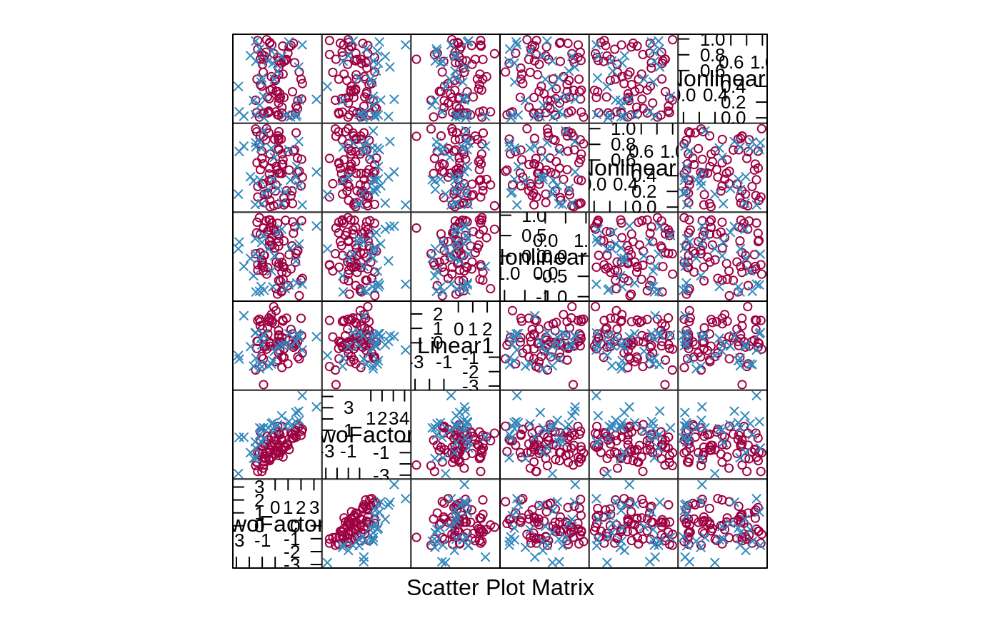

This function simulates regression and classification data with truly important predictors and irrelevant predictions.
SLC14_1(n = 100, noiseVars = 0, corrVars = 0, corrType = "AR1", corrValue = 0) SLC14_2(n = 100, noiseVars = 0, corrVars = 0, corrType = "AR1", corrValue = 0) LPH07_1(n = 100, noiseVars = 0, corrVars = 0, corrType = "AR1", corrValue = 0, factors = FALSE, class = FALSE) LPH07_2(n = 100, noiseVars = 0, corrVars = 0, corrType = "AR1", corrValue = 0) twoClassSim(n = 100, intercept = -5, linearVars = 10, noiseVars = 0, corrVars = 0, corrType = "AR1", corrValue = 0, mislabel = 0, ordinal = FALSE)
| n | The number of simulated data points |
|---|---|
| noiseVars | The number of uncorrelated irrelevant predictors to be included. |
| corrVars | The number of correlated irrelevant predictors to be included. |
| corrType | The correlation structure of the correlated irrelevant predictors. Values of "AR1" and "exch" are available (see Details below) |
| corrValue | The correlation value. |
| factors | Should the binary predictors be converted to factors? |
| class | Should the simulation produce class labels instead of numbers? |
| intercept | The intercept, which controls the class balance. The default value produces a roughly balanced data set when the other defaults are used. |
| linearVars | The number of linearly important effects. See Details below. |
| mislabel | The proportion of data that is possibly mislabeled. Only
used when |
| ordinal | Should an ordered factor be returned? See Details below. |
a data frame with columns:
A factor with levels "Class1" and "Class2"
Correlated
multivariate normal predictors (denoted as A and B above)
Uncorrelated random uniform
predictors (J, K and L above).
Optional uncorrelated standard normal predictors (C through
H above)
Optional uncorrelated standard normal
predictors (C through H above)
Optional uncorrelated standard normal predictions
Optional uncorrelated standard normal predictions
Optional correlated multivariate normal predictors (each with unit variances)
Optional correlated multivariate normal predictors (each with unit variances)
The first function (twoClassSim) generates two class data. The data
are simulated in different sets. First, two multivariate normal predictors
(denoted here as A and B) are created with a correlation our
about 0.65. They change the log-odds using main effects and an interaction:
intercept - 4A + 4B + 2AB
The intercept is a parameter for the simulation and can be used to control the amount of class imbalance.
The second set of effects are linear with coefficients that alternate signs and have values between 2.5 and 0.025. For example, if there were six predictors in this set, their contribution to the log-odds would be
-2.50C + 2.05D -1.60E + 1.15F -0.70G + 0.25H
The third set is a nonlinear function of a single predictor ranging between
[0, 1] called J here:
(J^3) + 2exp(-6(J-0.3)^2)
The fourth set of informative predictors are copied from one of Friedman's
systems and use two more predictors (K and L):
2sin(KL)
All of these effects are added up to model the log-odds.
When ordinal = FALSE, this is used to calculate the probability of a
sample being in the first class and a random uniform number is used to
actually make the assignment of the actual class. To mislabel the data, the
probability is reversed (i.e. p = 1 - p) before the random number
generation.
For ordinal = TRUE, random normal errors are added to the linear
predictor (i.e. prior to computing the probability) and cut points (0.00,
0.20, 0.75, and 1.00) are used to bin the probabilities into classes
"low", "med", and "high" (despite the function's name).
The remaining functions simulate regression data sets. LPH07_1 and
LPH07_2 are from van der Laan et al. (2007). The first function uses
random Bernoulli variables that have a 40% probability of being a value of
1. The true regression equation is:
2*w_1*w_10 + 4*w_2*w_7 + 3*w_4*w_5 - 5*w_6*w_10 + 3*w_8*w_9 + w_1*w_2*w_4 - 2*w_7*(1-w_6)*w_2*w_9 - 4*(1 - w_10)*w_1*(1-w_4)
The simulated error term is a standard normal (i.e. Gaussian). The noise
variables are simulated in the same manner as described above but are made
binary based on whether the normal random variable is above or below 0. If
factors = TRUE, each of the predictors is coerced into a factor.
This simulation can also be adapted for classification using the option
class = TRUE. In this case, the outcome is converted to be a factor
by first computing the logit transformation of the equation above and using
uniform random numbers to assign the observed class.
A second function (LPH07_2) uses 20 independent Gaussians with mean
zero and variance 16. The functional form here is:
x_1*x_2 + x_10^2 - x_3*x_17 - x_15*x_4 + x_9*x_5 + x_19 - x_20^2 + x_9*x_8
The error term is also Gaussian with mean zero and variance 16.
The function SLC14_1 simulates a system from Sapp et al. (2014). All
informative predictors are independent Gaussian random variables with mean
zero and a variance of 9. The prediction equation is:
x_1 + sin(x_2) + log(abs(x_3)) + x_4^2 + x_5*x_6 + I(x_7*x_8*x_9 < 0) + I(x_10 > 0) + x_11*I(x_11 > 0) + sqrt(abs(x_12)) + cos(x_13) + 2*x_14 + abs(x_15) + I(x_16 < -1) + x_17*I(x_17 < -1) - 2 * x_18 - x_19*x_20
The random error here is also Gaussian with mean zero and a variance of 9.
SLC14_2 is also from Sapp et al. (2014). Two hundred independent
Gaussian variables are generated, each having mean zero and variance 16. The
functional form is
-1 + log(abs(x_1)) + ... + log(abs(x_200))
and the error term is Gaussian with mean zero and a variance of 25.
For each simulation, the user can also add non-informative predictors to the data. These are random standard normal predictors and can be optionally added to the data in two ways: a specified number of independent predictors or a set number of predictors that follow a particular correlation structure. The only two correlation structure that have been implemented are
compound-symmetry (aka exchangeable) where there is a constant correlation between all the predictors
auto-regressive 1 [AR(1)]. While there is no time component to these
data, this structure can be used to add predictors of varying levels of
correlation. For example, if there were 4 predictors and r was the
correlation parameter, the between predictor correlation matrix would be
| 1 sym | | r 1 | | r^2 r 1 | | r^3 r^2 r 1 | | r^4 r^3 r^2 r 1 |
van der Laan, M. J., & Polley Eric, C. (2007). Super learner. Statistical Applications in Genetics and Molecular Biology, 6(1), 1-23.
Sapp, S., van der Laan, M. J., & Canny, J. (2014). Subsemble: an ensemble method for combining subset-specific algorithm fits. Journal of Applied Statistics, 41(6), 1247-1259.
example <- twoClassSim(100, linearVars = 1) splom(~example[, 1:6], groups = example$Class)